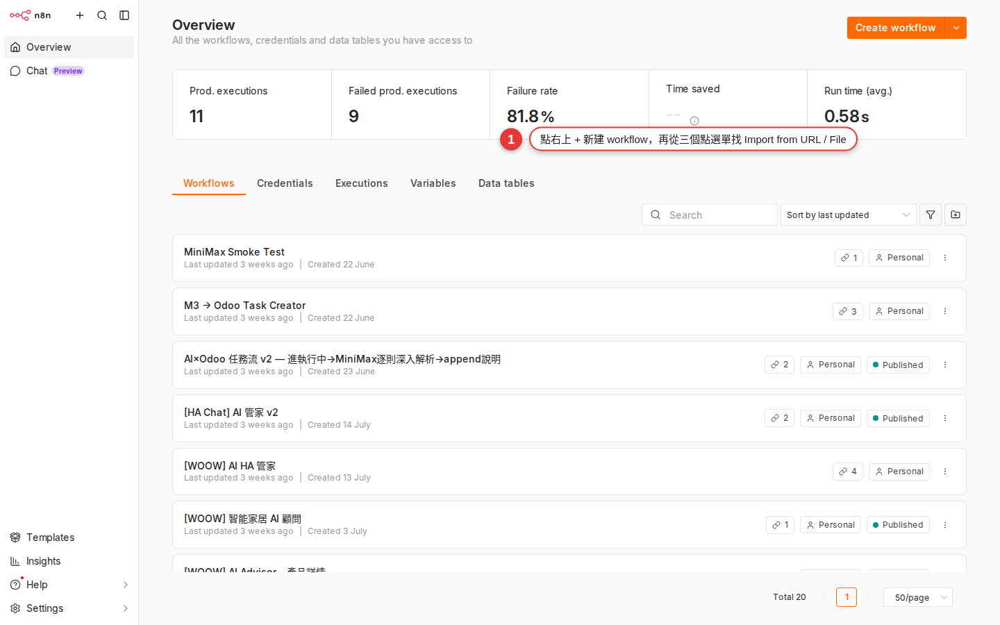

Find JSON on n8n.io and paste it in
In the last chapter we used the Templates gallery built into n8n, the official curated set; but the real volume lives on n8n.io/workflows, the big public square where thousands of community workflows wait for you to copy. This chapter shows you how to dig one out, how to "copy the JSON", how to paste it safely into Woow n8n, and the one step 90% of beginners forget once it is in.
Why this chapter is still worth your time
Chapter 4 showed you the gallery that the "Templates" item in the left sidebar of the n8n workspace calls up — a short, curated list that n8n itself picked. But the needs you actually run into at work are often far more niche:
- "Pull data from a Canadian GST/PST tax API and write it into Airtable"
- "When a Notion database changes, fire a LINE Notify message"
- "A customer fills in a Typeform, the data goes to HubSpot, and a Slack channel is opened"
Combinations this niche are usually missing from the built-in gallery. But n8n.io/workflows (the full community sharing site) has almost all of them, because over the past five years plenty of European and American engineers have anonymized their company workflows and shared them there. This chapter is about pulling a JSON out of that public square and getting it running in Woow n8n.
What workflow JSON actually is
Every workflow you drag together on the n8n canvas is really a JSON file underneath. That JSON records three things:
| What is in the JSON | What it maps to on the canvas | Does it travel with the file |
|---|---|---|
| The nodes array (each node's type, position and parameters) | The boxes you see on the canvas | Yes |
| connections (which node feeds which) | The lines between the boxes | Yes |
| Each node's field settings (for example, which channel Slack posts to, or the tab name in a Sheet) | The Parameters you see when you open a node | Yes |
| credentials (account passwords, OAuth tokens, API keys) | The "Credential to connect with" dropdown at the top of a node | No! |
The last row is the one that matters: the secret part of a credential (passwords, tokens, API keys) does not travel with the JSON. Sharing a workflow will not leak your own API key by accident; the other way round, a workflow someone shares with you does not hand you their account — you connect your own. What normally survives in the JSON is a short fragment such as credentials: {"slackApi": {"id": "abc123", "name": "Slack account"}}, which is reference information and nothing more. That id belongs to the original author's instance, so pasted into yours it shows up as a red "credential not found" — which is exactly the reminder to connect your own. n8n thought this through by design, so the security side is already handled for you.
Grab one from n8n.io/workflows and paste it into Woow n8n
-
Open n8n.io/workflows in your browser
Type
https://n8n.io/workflows/straight into the address bar. This is the "community sharing square" on n8n's own main site, kept separate from the gallery built into the workspace, and thousands of workflows are listed here. The home page is packed and it startles most people the first time. That is normal. -
Filter by keyword or category
There is a search bar at the top of the page; type the keyword you want, for example
Airtable,Notion,Line,Typeform. On the left there are filters: narrow the list by "App" (which services it uses) or "Category" (AI, Marketing, Sales, DevOps and so on). For something AI-flavored, type "Airtable" and then tick "AI" on the left. -
Click in and read the details
Opening a workflow card shows you three things: Preview (the node diagram, so you can see at a glance how complex the logic is), Description (what the author says it is for), and the list of nodes used and credentials needed. Thirty seconds on this page beats copying it over and taking it apart afterwards by a factor of ten.
-
Use the five signals from ch4 to judge whether it is worth copying
Remember the five "is this template reliable" signals from Chapter 4? Who the author is, the update date, whether the node count is sensible, whether the description is specific enough, and whether you have the credentials it needs — run the same five checks here. Pay particular attention to "Last update": some workflows on n8n.io date from 2020, and many nodes from that era have been renamed or retired, so pasting one in can produce a screen full of red errors.
-
Press "Use for free" → "Copy template to clipboard" in the top right
Once you have picked one, there is a green Use for free button in the top right; clicking it expands a set of options. One of them is Copy template to clipboard (it copies the whole workflow JSON to your clipboard) — that is the one we want. Click it and a small "Copied!" hint flashes on screen. Your clipboard now holds a big blob of JSON.
-
Switch back to the Woow n8n tab
Go back to the
n8n.woowtech.iotab you already have open (if you do not have one, follow Chapter 1). Open any existing workflow, or press "+ Add workflow" on the left to start a completely new, blank one. Start a new one: the nodes you paste land on whichever workflow you currently have open, and a fresh one keeps them from getting tangled up with work you already have. -
Right-click an empty spot on the canvas → Paste, or just press Ctrl+V
Move the mouse to an empty spot in the middle of the canvas (not on a node, and not in the workflow name field at the top), then press Ctrl+V (on a Mac, Cmd+V). Whoosh! — every node lands on your canvas at once, connections and original relative positions included.
-
Save a copy and rename it
The workflow name in the top left defaults to the English name the original author gave it on n8n.io. Click it and rename it in your own language (for example, "Canadian tax sync to Airtable") so you can find it again later in the Workflows list. Remember to press Save in the top right (or Ctrl+S), or a refresh will lose it.
If a colleague (or a GitHub Gist) hands you a JSON file
You do not have to go through n8n.io. A colleague sends you my_workflow.json on Slack, or you see a YouTuber who posted a workflow to a GitHub Gist — the same thing works. There are two ways to do it:
Way 1: paste the text (recommended, good for small workflows)
-
Open the JSON file
Open it in VS Code, Notepad or any text editor, or press "Raw" on the GitHub Gist page to see the raw JSON.
-
Select all and copy
Ctrl+A to select all, Ctrl+C to copy. The whole JSON goes into your clipboard.
-
Go back to the n8n canvas and paste on an empty spot
Exactly the same as step 7 in the previous section: press Ctrl+V on an empty spot.
Way 2: import the file (good for large workflows of a few hundred KB)
-
Open any workflow and find the three-dot menu "⋮" in the top right
It sits next to the workflow name, near the Activate toggle. Click it to expand a menu.

Figure 5-1The top right of the workspace: open the three-dot menu "⋮" next to the orange + Add workflow button and you get the Import from URL... / Import from File... entry points. -
Choose "Import from File..."
A file picker opens. Find the
.jsonyou downloaded, select it and press Open. The same menu also has Import from URL...: if the JSON sits at a GitHub Gist raw URL or some other public address, pasting the address is faster than downloading the file. -
All the nodes come in
The result is the same as copy and paste, you just skip opening the file and selecting all. For a large workflow (a few hundred nodes) this route is less likely to choke the clipboard.
The step everyone forgets after pasting: connect your own credential
This is the step 90% of beginners miss the first time they import a workflow. As we said, credentials do not travel with the JSON, so in every node you paste in the "Credential to connect with" dropdown is empty (or in red, saying it cannot be found).
How do you spot which nodes need one?
- The node gets a red border or a small red exclamation icon at the top — that is n8n saying outright "this node is not ready yet".
- Open the node and look at the Parameters panel: the credential dropdown at the very top shows "No credentials selected" or an error message on a red background.
- The canvas gives you a visual hint for the whole workflow: the red nodes form a chain, so one glance tells you what needs fixing.
How do you connect one?
-
Click the red node to open Parameters
Double-click the node (or single-click it in the panel on the right) and its contents expand.
-
Find the credential dropdown at the very top
If the dropdown already lists a credential of the same kind that you set up earlier (say a Slack OAuth credential you created before), pick it. If not, choose Create New Credential at the bottom.
-
Follow the prompts: fill in the account, authorize, or paste the API key
Every service has a different credential form (Slack uses OAuth, Airtable uses a Personal Access Token, HTTP Request can be left blank entirely). Chapter 13 goes through every credential type; for now, just follow what the UI asks for.
-
Save, then go back to the canvas and check the red is gone
Press Save once it is set up, and back on the canvas that node should go from a red border to a normal gray one. Only once every node is gray should you press Execute Workflow to test.
Common traps when you import an older workflow
n8n ships a major version every few months: nodes get renamed and parameters get rearranged. Pull a 2021 workflow off n8n.io and paste it into Woow n8n (which runs a relatively recent version) and these are the problems you are most likely to hit:
| Symptom | Cause | How to fix it |
|---|---|---|
| A node's name is in red, reading "Unknown node type" | The node was renamed in an n8n upgrade. The classic example: the Function node was replaced by the Code node in newer versions |
Delete that node, find the new name (Code) in the nodes panel, drag a fresh one in, and paste the original JavaScript into it |
| A node with a red border, and the error says "Node type not found: n8n-nodes-xyz" | The author used a "community node" (a third-party node installed from the community) that your n8n does not have | An admin has to install the community package. That is out of scope for this chapter — skip it for now, or find a replacement workflow that uses no community nodes |
| The Webhook node's URL looks like somebody else's address | A Webhook node builds its URL automatically from "the base URL of your own n8n", so pasting it in generates a new URL that belongs to you — the original author's URL cannot reach you (a good thing; that is the isolation working) | Open the Webhook node, read your own Production URL, and hand that new URL to whatever system needs to call you (a LINE bot, Typeform, and so on) |
| A node is missing a parameter field, or has gained a new one | The node's schema changed when it was upgraded. New fields usually have a default and will not blow up; old fields may no longer do anything | Click the node, press Execute Node to run it once by hand, and let the error message tell you which field has a problem before you fill it in |
| The whole workflow pasted in, but only half of it seems to be on screen | The nodes sit far off to the bottom right of the canvas, outside your view | Press the "Fit to view" button on the control bar in the bottom right of the canvas (the magnifier aimed at a screen), or just press the 1 key to zoom out and the whole thing appears |
The other direction: export your own workflow for someone else
Built a useful workflow and want to share it with your team or a friend? The steps are just as simple:
-
Open the workflow you want to export
Click into it from the Workflows list; any one will do.
-
Three-dot menu "⋮" in the top right → "Download"
Choosing Download saves a
.jsonfile straight to your machine. The file name defaults to the workflow's name. -
Hand the file (or the whole JSON text) over
Slack, email or Google Drive all work. Once they have it, they paste it into their own n8n the way this chapter describes.
Authorization: Bearer sk-xxx into the header of an HTTP Request node), that does travel with the JSON. Check the Parameters of every node before you share: every API key, password and token belongs in the credential system, not hard-coded into a field.